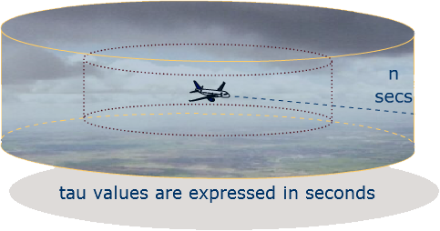
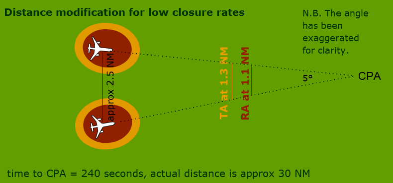

Select the links opposite to look at these features in more detail.
Warning times - the tau concept
Tau
Warning times, which are a function of the sensitivity level, are threshold values which define the boundaries of the protected airspace around an aircraft and enable TCAS to deliver alerts at the appropriate moment. The CAS logic compares the time-to-go to CPA to the warning times corresponding to the current SL in order to classify an aircraft as an intruder or a threat.
Warning times are known as 'tau' values, named after the Greek letter for t - ( = time).
Thus an aircraft under surveillance may be on a course which will lead to it satisfy the range and altitude criteria for an alert, but only when the time-to-go to CPA falls below the tau thresholds, and the aircraft becomes classified by TCAS as an intruder, will a TA or an RA be issued.
The times are adjusted according to the sensitivity level to avoid excessive false alarm rates.
Table of tau values

| Altitude | SL | TA | RA |
| > FL200 | 7 | 48 | 35 |
| FL100 - FL200 | 6 | 45 | 30 |
| FL050 - FL100 | 5 | 40 | 25 |
| 2350 ft - FL050 | 4 | 30 | 20 |
| 1000 ft - 2350 ft | 3 | 25 | 15 |
| 0 - 1000 ft | 2 | 20 | none |
N.B. The tau values shown are only valid for the general case. The RA-related tau values can be reduced for some geometric configurations, such as 1000 ft level off, so as to reduce the number of unecessary alerts.
Select the rows above to reveal the tau values. Once you have done that, try the questions.
Select here to try the questions. Select here to return to the activity.- Warning times are
at higher sensitivity levels because aircraft are less manoeuvrable at higher altitudes and speeds.
- If two aircraft are in conflict at FL160, a TA will be issued
seconds before CPA and an RAseconds before.
- RAs are not issued when an aircraft is within
of the ground.
DMOD - Distance Modification (i)
In cases where the closure rate is very low, TAs and RAs will be triggered according to range criteria, even though time to CPA exceeds the stipulated values for such events. This Distance MODification provides extra protection. Like tau values, DMOD values are a function of the sensitivity level and vary according to aircraft altitude.
The DMOD values for the various sensitivity levels are shown below:
| DMOD Values (NM) | |||
|---|---|---|---|
| Altitude | SL | TA | RA |
| > FL200 | 7 | 1.30 | 1.10 |
| FL100 - FL200 | 6 | 1.00 | 0.80 |
| FL050 - FL100 | 5 | 0.75 | 0.55 |
| 2350 ft - FL050 | 4 | 0.48 | 0.35 |
| 1000 ft - 2350 ft | 3 | 0.33 | 0.20 |
| 0 - 1000 ft | 2 | 0.30 | none |
DMOD (ii)
Two aircraft are converging on the same level at 5 degrees at FL330. At 240 seconds they will be approximately 30 NM from the CPA, however, they will only be separated by approximately 2.5 NM horizontally, and they will have actually lost separation. From that point onwards it is only a short matter of time before a TA or RA will be triggered.
Frequently, the STCA will be triggered before this point, and before such a TA or RA is issued. If the aircraft continue on their current headings, a TA will be triggered when the horizontal distance between the aircraft is reduced to 1.3 NM and a RA at 1.1 NM.